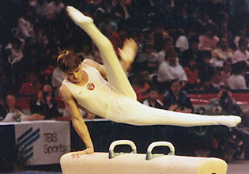

Valentin Mogilny (USSR)
1990 European AA Champion

Medal Total
World
Championships: 5 Gold, 1 Silver
World Cup: 2 Gold, 1 Silver
European Championships: 6 Gold, 3 Silver, 1 Bronze
Mogilny was born on December 18, 1965. He trained at the Army Club in Leninsk-Kuznetsk, then moved to Moscow to work with coach Alexander Alexandrov. Divorced from wife Olga Bicherova (1981 world champion), with whom he had a son, Mogilny lived in France and worked as a coach until his death on November 22, 2015. Prior to their divorce, he and Bicherova were interviewed by Sovetsky Sport in 1997.
Competition Results
1980
Jr. USSR Cup (Candidate for Master of Sport): 2nd AA, 2nd PH, 2nd
PB, 2nd HB, 3rd FX
USSR Youth Championships: 2nd AA
1982
Jr. Friendship Tournament (Druzhba): 1st Team, 8th AA, 2nd
PH
Nebraska-JPN-USSR Collegiate Meet: 9th AA
USSR Youth Championships: 1st AA (Candidate for Master)
1983
Jr. Friendship Tournament (Druzhba): 1st Team, 2nd AA, 1st PB,
2nd PH
Jr. GDR-USSR Dual Meet: 1st Team, 3rd AA, 1st HB, 2nd PH, 2nd V, 3rd R
Chunichi Cup: 6th AA, 3rd V
1984
GDR-USSR Dual Meet: 1st Team, 5th AA
Riga International: 2nd AA
USSR Championships: 7th AA
1985
European Championships: 2nd AA, 2nd R,
4th FX, 4th PH, 8th V, 8th HB
Moscow Cup: 5th AA
Moscow News: 3rd AA, 1st PH, 1st R, 3rd HB
University Games: 1st Team, 2nd AA, 1st PH, 1st HB, 4th PB, 5th FX, 5th R
USSR Championships: 3rd AA
USSR Cup: 1st PB
World Championships: 1st Team, 6th AA, 1st PH,
1st PB, 4th FX
1986
Goodwill Games: 1st Team, 2nd AA, 1st PH, 1st R, 1st PB, 2nd FX
USA-USSR Dual Meet: 1st Team, 1st AA
World Cup: 4th AA, 1st R, 1st PB, 2nd
PH, 6th HB
1987
European Championships: 5th AA, 1st R, 7th PB, 8th
HB
University Games: 1st Team, 4th AA, 1st PH, 1st HB, 2nd PB, 3rd R
USA-USSR Dual Meet: 1st Team, 3rd AA
USSR Championships: 2nd AA
1988
USSR Cup: 4th AA
1989
DTB Cup: 1st AA, 1st V, 3rd R, 3rd HB, 6th PH
European Championships: 2nd AA, 1st PH, 1st
V, 3rd PB, 5th R, 7th HB
World Championships: 1st Team, 2nd AA, 1st
PH, 4th PB, 7th R
1990
European Championships: 1st AA, 1st PH,
1st PB, 5th R
French International: 1st AA, 1st PH, 1st PB
Goodwill Games: 1st Team, 1st PH
1994
Reese's International Cup: 3rd AA
1995
Reese's International Cup: 1st AA
1996
French International: 5th PH
Messe Cup: 4th AA
Reese's International Cup: 4th AA
This page was created on February 13, 2000
and was last updated on October 16, 2026.
© Gymn Forum